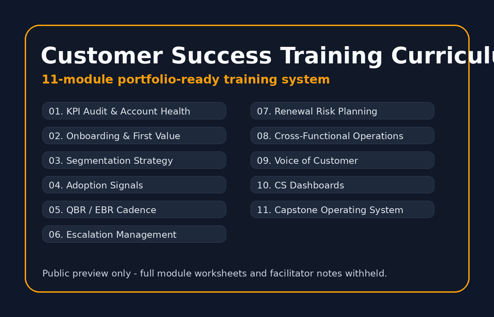

Module 01
KPI Audit & Account Health
Define outcomes, health signals, leading indicators, and risk visibility.
A public-safe portfolio page for an 11-module customer success curriculum designed to teach account health, onboarding, adoption, QBRs, risk management, dashboards, and customer operating rhythm.

The training moves from foundational customer-success thinking into practical execution: account health, risk, stakeholder alignment, cross-functional ownership, and dashboards.
Define outcomes, health signals, leading indicators, and risk visibility.
Map handoffs, milestones, expectations, and early customer value.
Prioritize accounts by fit, revenue, risk, adoption, and growth potential.
Identify usage, relationship, communication, and engagement patterns.
Turn account data into executive conversations and action plans.
Create ownership, timelines, visibility, and recovery rhythm.
Build renewal readiness and spot preventable churn earlier.
Align sales, support, product, finance, operations, and leadership.
Capture customer feedback and convert it into internal action.
Design scorecards, reviews, and customer health operating rhythm.
Synthesize the training into a customer success operating model.
Demonstrates curriculum architecture, business education, and leadership enablement.
This portfolio version shows the training architecture and learning strategy while protecting the full instructional asset for future consulting, workshop delivery, or private client use.